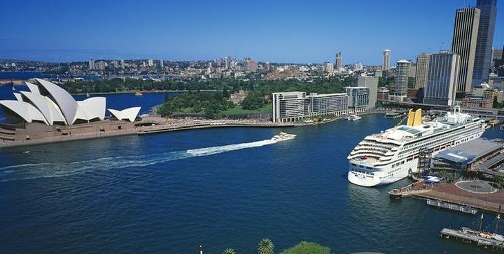
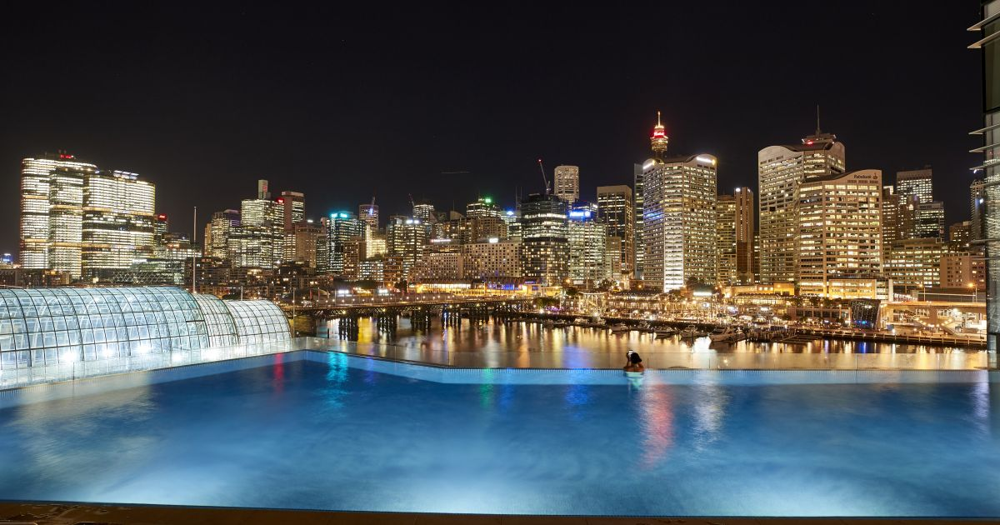
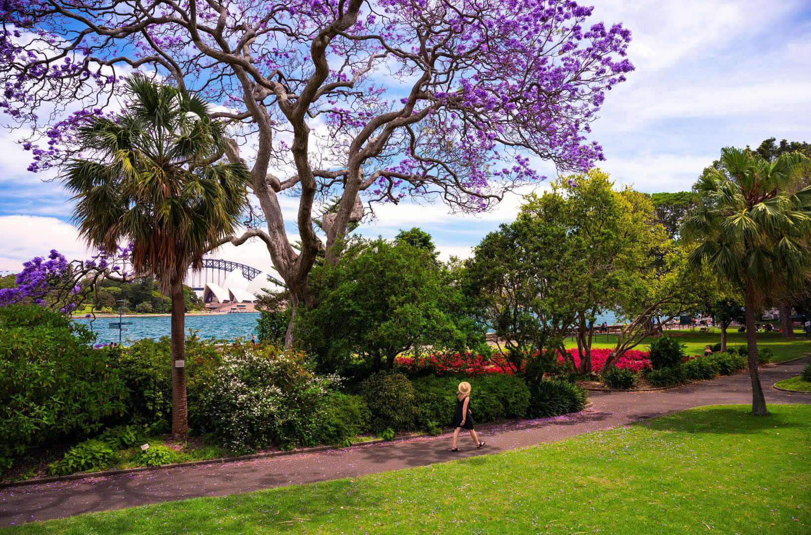
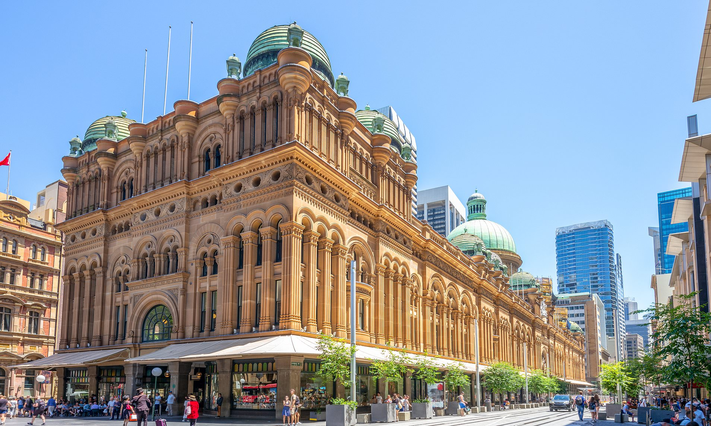
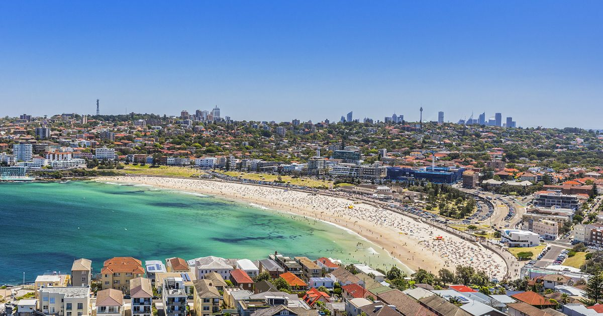
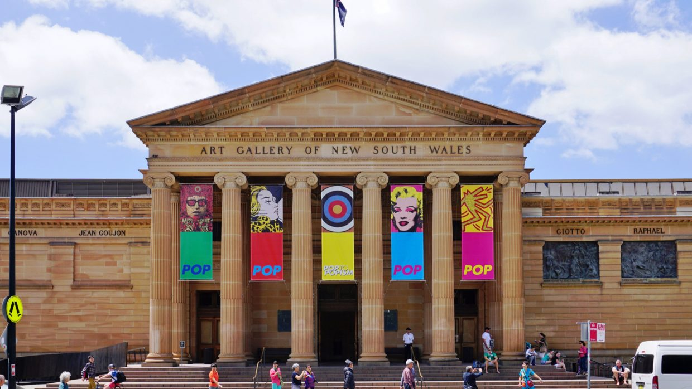
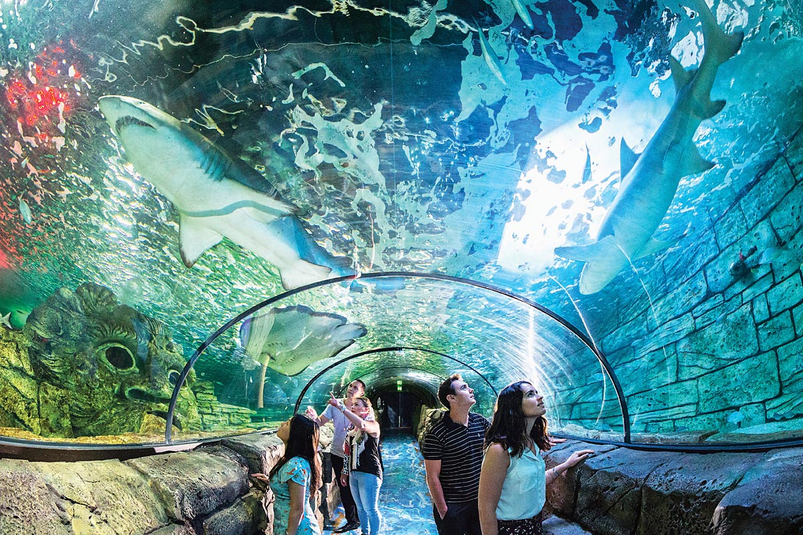

Sydney Opera House
Sydney Opera House, opera house located on Port Jackson (Sydney Harbour), New South Wales, Australia. Its unique use of a series of gleaming white sail-shaped shells as its roof structure makes it one of the most-photographed buildings in the world.

Sydney Harbour Bridge
Sydney Harbour Bridge, steel-arch bridge across Sydney Harbour (Port Jackson), Australia. The bridge, opened in 1932, serves as the primary transportation link between Sydney and its suburbs on the northern side of the harbour. It spans about 500 metres (1,650 feet), making it one of the longest steel-arch bridges in the world. Along its length, it features four railroad tracks, a highway, and two pedestrian walkways.

Harbor Cruises from Circular Quay
Built by convict labor in Sydney Cove, bustling Circular Quay is now home to the city's main ferry terminal. Thousands of commuters flood the area at peak hours, cafés and restaurants line the waterfront, and street performers entertain locals and visitors along the sunny walkways. One of the most popular things to do here, and the best way to appreciate Sydney's sparkling waterfront setting, is to hop aboard a harbor cruise, like the popular two-hour Sydney Harbour Coffee Cruise. Ferries also depart from here to prime spots, such as Manly, Watsons Bay, and Taronga Park Zoo. During the annual winter migration, the Sydney Whale-Watching Cruise take passengers out past Sydney Heads to view these magnificent creatures.

Darling Harbour
A hub for tourists and locals alike, Darling Harbour is a waterfront pedestrian precinct packed with shops, restaurants, museums, exhibitions, and entertainment venues. Families will love Madame Tussaud's; the WILD LIFE Sydney Zoo; and the SEA LIFE Sydney Aquarium, which contains the world's largest collection of Aus tralian marine creatures. The SEA LIFE Sydney Aquarium Entrance Ticket is a great way to get ahead of the crowds and it also offers discounts on other attractions. Powerhouse Museum offers interactive exhibits on science, technology, design, and history, while nautical-minded history buffs can board a replica of Captain Cook's ship, Endeavour, at the Australian National Maritime Museum.

The Royal Botanic Garden Sydney
A tranquil oasis amid the hustle and bustle of the city, the Royal Botanic Garden at Farm Cove lies a short and scenic stroll along the waterfront from the Sydney Opera House. The gardens were established in 1816 and encompass 30 hectares of themed gardens with towering trees, palm groves, orchids, ferns, and flocks of fruit bats. Visiting the gardens is one of the many wonderful things to do in Sydney for free. Among the highlights are the Palace Rose Garden, which includes some 1,800 roses, and the Glasshouse Latitude 23 and Fernery, brimming with tropical foliage, begonias, and orchids. For the less energetic, a hop-on, hop-off train tours the grounds. After exploring the gardens, you can relax at the café or restaurants, or enjoy a hillside picnic with beautiful harbor views.

Queen Victoria Building
A high point of Sydney shopping is the Romanesque-style Queen Victoria Building ("QVB"), linked by underground arcades with Town Hall Station. Originally built as a market hall between 1893 and 1898, this elegant building is crowned by a high central dome surrounded by 20 smaller domes. After decades of neglect and even plans for demolition, this grand sandstone building was restored to its original state in the early 1980s. Today, more than 200 high-end shops line its light-filled galleries. It's worth a visit, even for those who shun the shops, just to admire its successful restoration, as well as its beautiful stained glass windows and mosaic floors. The Tea Room QVB hosts a High Tea under crystal chandeliers here that is popular with locals and visitors.

Sydney Beaches
Sydney is famous for its fabulous beaches. Tucked around the harbor are many sheltered coves with calm water and sugary sands. Less than a 15-minute drive from the city, iconic Bondi Beach beckons with its great surf, café scene, and cosmopolitan vibe. For fantastic ocean views, take the coastal walk along the cliffs from Bondi to Coogee. Other ocean beaches include Cronulla (the only one easily accessible by train from the city), Bronte, Tamarama, and Maroubra. A 30-minute ferry ride from the city, Manly is a favorite seaside destination with its beachfront promenade, netted ocean pool, and excellent shops and restaurants. Farther north from the city, surfers will find some fantastic breaks at Collaroy, Dee Why, and Narrabeen. Swimmers should stay between the red and yellow flags. Volunteer lifeguards patrol the surfing beaches on the Pacific during the summer and run popular lifesaving competitions.

Art Gallery of New South Wales
More details

SEA LIFE Sydney Aquarium
More details
{kind=link}
{kind=link}
{kind=link}
{kind=link}
{kind=link}
{kind=link}
{kind=link}